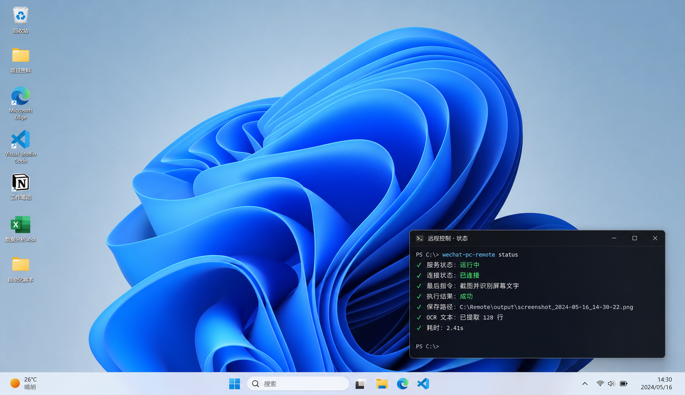

Demo 02 · Agent · 自动化
微信远程控制电脑
用手机微信发指令，Agent 理解任务、选择 Skill，通过 PowerShell 在 Windows 本地执行，并把截图、OCR 或报告回传给你。
1微信指令
帮我看一下桌面，并总结今天的待办事项
打开 C:\Projects 文件夹
查找过去 7 天的销售数据，生成趋势图
把这份数据整理成表格并导出 Excel
2Agent 推理
- 理解任务识别意图：查看桌面并总结待办
- 选择技能调用截图、OCR、文件和报告 Skill
- 执行动作PowerShell 脚本完成本地操作
- 生成回复整理成用户能直接看的中文回复
3Windows 输出

- 桌面包含项目评审材料、销售数据和今日总结草稿。
- 最新文件：sales_trend_7days.xlsx。
- 需要跟进：团队周会 15:00，报告初稿校对。
今日工作总结
完成桌面读取、数据趋势整理和报告草稿生成。